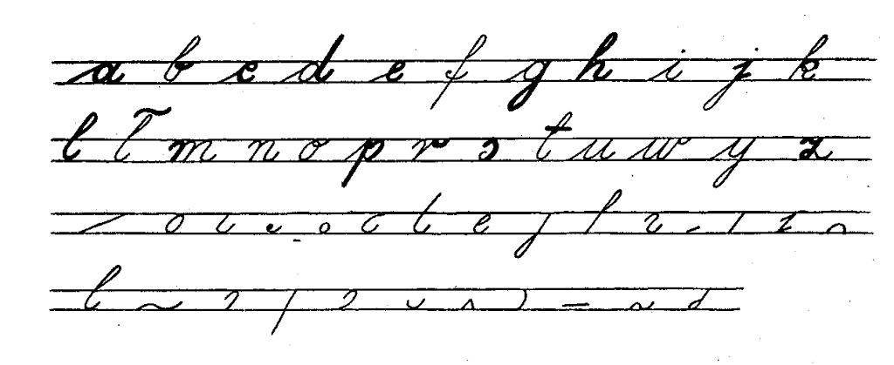
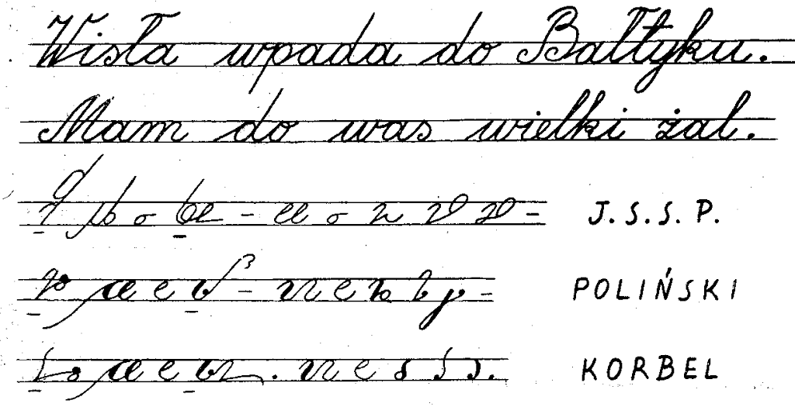

International
InternationalStenografia a kaligrafia - artykuł
2011-06-20 | autor: flamenco108W dzisiejszym wpisie zaprezentuję artykulik autorstwa Jerzego Krupińskiego, którego podręcznik do stenografii wydany w latach 70-tych osiągnął zapewne największe nakłady. Sądzę tak na podstawie obserwacji ofert podręczników do tej szlachetnej sztuki, jakie pojawiają się na allegro.pl. Komentarz do artykułu pozwolę sobie zamieścić w następnym wpisie.
Kaligrafia - wstępem do stenografii
Mechanizacja w pisaniu - przede wszystkim w postaci używania w coraz większym stopniu maszyn do pisania - jes tbezsprzecznie pozytywnym zjawiskiem. Przyspiesza tok wielu prac, ułatwia je i umożliwia pisanie tekstów jednocześnie w wielu egzemplarzach. Stały postęp w tej dziedzinie spycha jednak na dalszy plan pismo zwykłe, co w konsekwencji powoduje lekceważenie i nieprzestrzeganie zasad kaligrafii. Dziś rzadko kto, mając do dyspozycji maszyny do pisania, powielacze, drukarnie itp., liczy się z dokładością i precyzją pisma ręcznego. Przystępując w tej sytuacji do nauki stenografii natrafia się na duże trudności. Trzeba je od razu przezwyciężyć, bowiem zasady budowy pisma stenograficznego są zaprzeczeniem jakiejkolwiek niedokładności, czy dowolności graficznej. O co tu chodzi?
Każdy polski podręcznik stenografii podaje na wstępie, że znaki stenograficzne zbudowane są z elementów graficznych pisma zwykłego. Są to elementy kaligraficzne zwykłego pisma kursywowego. Z elementów tych zbudowane zostały systemy prostych, krótkich znaków, którym nadano określone znaczenia dla dźwięków spółgłoskowych i samogłoskowych, i z kolej - przez ich specjalne łączenie - dla całych grup spółgłoskowych i zgłoskowych. Jeżeli dodamy do tego zasady symbolizacji samogłosek (obniżanie, odsuwanie, czy podwyższanie znaków spółgłoskowych), budowę stałych skrótów (znaczników) i szereg innych kobinacji graficznych ,to wynika stąd jasno, iż owe proste elementy kaligraficznego, zwykłego pisma kursywowego, podlegające następnie szerokiej rozbudowie, z natury rzeczy muszą być kreślone z wielką dokładnością. Dokładności tej nie wolno ani na chwilę tracić z pola widzenia nie tylko w czasie nauki, ale również przy posługiwaniu się stenografią w praktyce. Nawet przy największych szybkościach. W przeciwnym razie pismo stanie się nieczytelne, a tym samym bezwartościowe.
Pismo stenograficzne jes zatem kaligrafią najwyższego rzędu. Stąd przy rozpoczynaniu nauki stenografii konieczne jest cofnięcie się na chwilę do elementarza, by uświadomić sobie prawidłowości graficzne podstawowych elementów, których szerokim i wszechstronnym rozwinięciem są systemy stenograficzne.

Szereg zawartych w powyższych literach elementów graficznych (zakreślonych grubą linią i następnie wypisanych oddzielnie poniżej) wchodzi bezpośrednio do każdego graficznego systemu stenograficznego, stanowiąc jego podstawę obudowaną całym zespołem znaków pokrewnych i kombinacji logicznych.
Można więc powiedzieć, że kaligrafia jest wstępem do nauki stenografii. Zasady kaligrafii - doprowadzone w piśmie stenograficznym do najwyższej precyzji - rządzą nim niepodzielnie. Nieprzestrzeganie tych zasad może spowodować, że cały wysiłek włożony w naukę stenografii pójdzie na marne.
Stenografia stertuje od elementarza. Jest to jednak tylko czas startu. A sztuka graficzna połączona z krótkością pisma pozwala - po zdobyciu maksymalnej wprawy - dorównać biegowi żywego słowa.
Krótkość pisma stenograficznego w stosunku do pisma zwykłego można by zilustrować poniśzym zestawieniem, biorąc za podstawę trzy najbardziej rozpowszechnione polskie systemy stenograficzne. Widać tu, że trud włożony w naukę stenografii nie jest bezowocny.

Jerzy Krupiński
Stenograf Polski, nr 1(95), rok XIX, I-II 1965
2011-06-20 autor: flamenco108